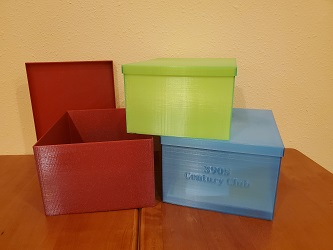
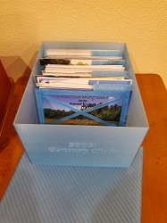

<!-- build:title -->3D Printing for Amateur Radio<!-- /build:title -->
<!-- build:content -->
    <h3>3D Printing for Amateur Radio</h3>
    <p>
      <dt class="status-completed">QSL Card Storage Box</dt>
      <dd>Storage boxes for QSL cards (3.5 x 5.5) and post cards (4 x 6) including a special 3905 Century Club edition box with band dividers.
          <a href="qsl-card-boxes-1.jpg"></a>
          <a href="qsl-card-boxes-2.jpg"></a>
          <ul>
              <li><b>QSL card box (3.5 x 5.5):</b> <a href="qsl-card-box.stl">qsl-card-box.stl</a> <a href="qsl-card-box-lid.stl">qsl-card-box-lid.stl</a> </li>
              <li><b>Post card box (4 x 6):</b> <a href="post-card-box.stl">post-card-box.stl</a> <a href="post-card-box-lid.stl">post-card-box-lid.stl</a> </li>
              <li><b>3905 Century Club card box (4 x 6):</b> <a href="3905-card-box.stl">3905-card-box.stl</a> <a href="3905-card-box-lid.stl">3905-card-box-lid.stl</a> </li>
              <li><b>Post card box dividers (for 4 x 6 boxes):</b> <a href="divider-20m.stl">divider-20m.stl</a> <a href="divider-40m.stl">divider-40m.stl</a> 
                  <a href="divider-80m.stl">divider-80m.stl</a> <a href="divider-160m.stl">divider-160m.stl</a> <a href="divider-digital.stl">divider-digital.stl</a></li>
          <ul>
      </dd>
    </p>
<!-- /build:content -->
